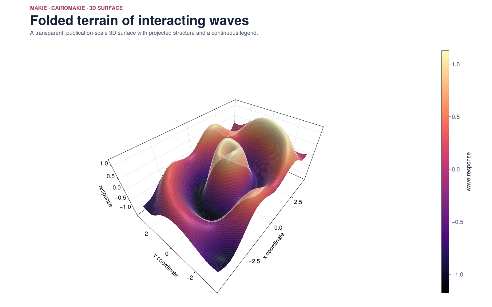

01 · 3d surface
Surface terrain
How do interacting waves shape a terrain?
src/MakieDemos.jl
function surface_terrain()
fig = Figure(size = (1600, 1000), backgroundcolor = :transparent)
header!(
fig,
2,
"MAKIE · CAIROMAKIE · 3D SURFACE",
"Folded terrain of interacting waves",
"A transparent, publication-scale 3D surface with projected structure and a continuous legend.",
)
axis = Axis3(
fig[4, 1];
xlabel = "x coordinate",
ylabel = "y coordinate",
zlabel = "response",
azimuth = 1.22pi,
elevation = 0.23pi,
aspect = (1.45, 1.0, 0.65),
perspectiveness = 0.72,
xypanelcolor = :transparent,
xzpanelcolor = :transparent,
yzpanelcolor = :transparent,
xgridcolor = GRID,
ygridcolor = GRID,
zgridcolor = GRID,
)
xs = range(-4.2, 4.2, length = 190)
ys = range(-3.2, 3.2, length = 155)
z = [
0.78 * sin(sqrt(x^2 + (1.25y)^2) * 2.1) * exp(-0.055 * (x^2 + y^2)) +
0.32 * cos(1.6x - 0.8y) +
0.12x for x in xs, y in ys
]
surface = surface!(
axis,
xs,
ys,
z;
color = z,
colormap = :magma,
shading = true,
diffuse = Vec3f(0.9, 0.9, 0.9),
specular = Vec3f(0.28, 0.28, 0.28),
shininess = 22f0,
)
wireframe!(axis, xs, ys, z; color = RGBAf(1, 1, 1, 0.10), linewidth = 0.45)
Colorbar(fig[4, 2], surface; label = "wave response", width = 24)
colsize!(fig.layout, 1, Relative(0.91))
return fig
end